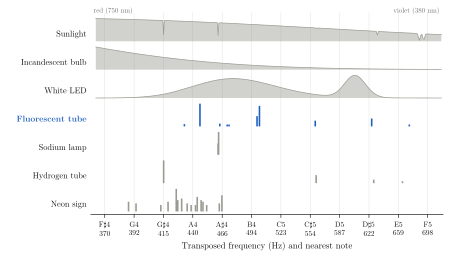
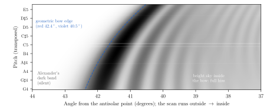

On the Absence of Radio Rainbows and the Sonification of the Optical One
Summer 2026
The children’s song exhorts us to “sing a rainbow”, but the physics of doing so has received surprisingly little attention. We first ask whether rainbows emit, or could be detected at, radio frequencies. A rainbow is not a source but a caustic: sunlight refracted and internally reflected by raindrops into a cone of half-angle about 42\(^\circ\) around the antisolar point, unique to each observer. The mechanism needs droplets much larger than the wavelength. For radio waves on millimetre-scale raindrops, scattering is Rayleigh-like and featureless; at sub-millimetre wavelengths, where the sizes become comparable, absorption by water suppresses the internal ray paths. We therefore predict, with some confidence and mild disappointment, that there are no natural radio rainbows.
We then propose a large dielectric prism illuminated by the Sun and by artificial lamps. Solar microwave emission should be measurably refracted but negligibly dispersed, while the radio emission of lamps comes from their drive electronics, not their light. Finally we turn to the optical bow. Transposing the visible spectrum (430–750 THz) down by 40 octaves maps it to roughly G4–F5, a span of about a minor seventh. Using synthesised audio from model spectra, we show that a continuous source such as sunlight sounds like band-limited noise, and a scan across the bow sounds like a filter sweeping open from the low end. Line-spectrum sources fare better: a fluorescent tube produces a recognisable whole-tone chord. We describe simple experiments with fluorescent tubes that let the reader hear this for themselves. We conclude that one can indeed sing a rainbow, provided one is content to hum.
Keywords: rainbow; Mie scattering; microwave refraction; sonification; spectral lines; fluorescent lamps
We can sing a rainbow, but only after lowering it by 40 octaves, and it mostly hums. This paper explains why, and why no radio telescope will do it for us.
The song “I Can Sing a Rainbow” (Hamilton 1955) lists the colours red, yellow, pink, green, purple, orange and blue, and invites the listener to sing them. Taken literally, this raises three questions:
Does a rainbow emit anything outside the visible band, in particular radio waves that a receiver could turn into sound?
If not, can we build an artificial rainbow, a large prism, that spreads radio waves the way a rainbow spreads light?
Failing both, what would the visible rainbow sound like if we simply moved its frequencies down into the range of hearing?
A rainbow is not an object. Sunlight enters a spherical raindrop, refracts, reflects once off the back surface and refracts out again. Light leaving the drop piles up near a minimum deviation angle of about 138\(^\circ\), so it returns about 42\(^\circ\) from the antisolar point (Descartes 1637); for modern accounts see Nussenzveig (1977), Lee and Fraser (2001) and Adam (2002). Because the refractive index of water falls slightly from violet to red, each colour has its own angle, and the bow is spread from about 40.5\(^\circ\) (violet) to 42.4\(^\circ\) (red). Every observer sees a different set of drops, so there is no single rainbow to point an antenna at.
Rainbows and sound have met before, in three different senses. True acoustic rainbows, caustics just like the optical one, appear when sound scatters from fluid spheres in which it travels more slowly than in the surrounding water (Marston and Langley 1983). Acoustic “rainbow trapping” metamaterials (Zhu et al. 2013) and topology-optimised acoustic prisms (Christiansen, Fernandez-Grande, and Sigmund 2025) sort broadband sound by frequency into different positions or directions: rainbows in the colour-sorting sense, not the 42\(^\circ\) sense. This paper asks the reverse question: not how to make a rainbow out of sound, but how to make sound out of a rainbow.
A rainbow needs drops much larger than the wavelength, and at radio wavelengths raindrops are hundreds to thousands of times too small. The relevant number is the size parameter, the drop’s circumference divided by the wavelength, \[x = \frac{2\pi a}{\lambda},\] where \(a\) is the drop radius. The geometric-optics rainbow of Section 1 is accurate for \(x\) of several hundred or more. Supernumerary bows and Airy’s wave correction (Airy 1838) appear as \(x\) falls into the tens to low thousands. Below \(x\approx1\) there is no ray path at all: the drop scatters as a tiny dipole (Rayleigh scattering), with intensity falling as the fourth power of wavelength and no preferred angle near 42\(^\circ\) (Table 1).
| Band | Wavelength | \(x\) | Regime | Rainbow? |
|---|---|---|---|---|
| Visible light | 0.4–0.7 μm | 9,000–16,000 | Geometric optics | Yes |
| Far infrared / THz | 0.1–1 mm | 6–60 | Mie resonances | No: water absorbs the internal ray within \({\sim}0.1\) mm |
| Millimetre wave (100 GHz) | 3 mm | 2 | Mie | No |
| Weather radar (3 GHz) | 10 cm | 0.06 | Rayleigh | No |
| FM radio (100 MHz) | 3 m | 0.002 | Rayleigh | No |
The one band where the sizes almost match, the far infrared, is closed by water itself. Liquid water absorbs so strongly there that light entering a drop is gone long before it reaches the back surface to reflect. With no internal reflection, there is no bow.
Rain does interact with radio, and usefully: weather radar measures exactly this Rayleigh scattering (NOAA NWS n.d.), whose strength scales with the sixth power of drop diameter. But radar echoes come back in all directions, with no bright 42\(^\circ\) cone. A radio rainbow would need drops about a metre across, which is not a form of weather we would wish on anyone.
A metre-scale prism of the right material will bend the Sun’s microwaves by tens of degrees but will barely spread them into a spectrum, and it does nothing at all to the radio noise from lamps. If nature won’t make a radio rainbow, we can try to build one. A prism avoids the size problem of Section 2: we can make it as large as we like.
The Sun is bright at centimetre wavelengths, with a brightness temperature of order 10,000 K at 10–12 GHz. That is easily detected with a domestic satellite dish, Ku-band LNB and satellite-finder meter or software-defined radio; a commercial satellite-TV dish has been used to measure the Sun’s flux at 11.2 GHz (Mandal et al. 2016). Daily 10.7 cm solar flux (the F10.7 index) has been a standard space-weather measurement since 1947 (NOAA SWPC n.d.).
Mount a satellite dish (about 80 cm) with a Ku-band LNB (10.7–12.75 GHz) on a steerable mount, and log signal strength.
Map the Sun with no prism: a drift scan gives its position and the dish’s beam width (about 2\(^\circ\) at 11.7 GHz for an 80 cm dish).
Place a 60\(^\circ\) prism across the dish aperture. It must be at least as large as the dish, which is why the prism needs faces of a metre or more.
Map the Sun again. The peak should move by the prism’s deviation angle.
Repeat at the band’s two ends (10.7 and 12.75 GHz) to look for dispersion: a shift of peak position between them.
The deviation at minimum deviation, for apex angle \(A\) and refractive index \(n\), is \[D = 2\arcsin\!\left(n\sin\frac{A}{2}\right) - A .\] The material matters more than the size: it must be transparent at 12 GHz, not just in visible light (Table 2).
| Material | \(n\) | Loss | Deviation | Verdict |
|---|---|---|---|---|
| PTFE (Teflon) | 1.44 | \({\sim}0.3\) dB/m | \({\sim}32^\circ\) | Ideal, but about a tonne and costly |
| Paraffin (candle) wax | 1.5 | \(<1\) dB/m | \({\sim}37^\circ\) | Best value; the classic teaching-lab microwave prism (UMD n.d.) |
| Solid perspex (PMMA) | 1.6 | \({\sim}9\) dB/m | \({\sim}46^\circ\) | Works, with some loss |
| Window glass | \({\sim}2.4\) | 10–20 dB/m | none | Total internal reflection (\(n>2\)); also too lossy and several tonnes |
| Perspex shell filled with water | \({\sim}8\) | \({\sim}3\) dB/mm | — | Acts as a mirror (Section 3.4) |
The expected result is clear refraction with almost no dispersion. PTFE and wax have almost no change in refractive index across 10–13 GHz, so the two ends of the band leave the prism within a small fraction of a degree of each other, well inside the dish’s 2\(^\circ\) beam. We would have bent a radio beam, but not made a radio rainbow.
A hollow perspex prism filled with water behaves completely differently in the two bands, and both results are worth having.
In visible light it is the best prism of all for this paper. The flat, parallel perspex walls add no net deviation, so the light is bent by the water alone. Water’s refractive index (about 1.333) gives a minimum deviation of about 24\(^\circ\), and red to violet spread over about 1\(^\circ\), roughly 9 cm on a screen 5 m away. This is a rainbow made from rainbow material: the same water, with the same dispersion, that makes the real bow. A solid perspex prism (\(n\approx1.49\)) bends light more (about 36\(^\circ\)) and spreads it a little wider (about 1.5\(^\circ\)). Mind the weight: an equilateral prism 2 m on a side and 2 m deep holds about 3.5 tonnes of water, and the bottom panel takes about 20 kPa of pressure. A 30 cm version works just as well optically.
At microwave frequencies it is a mirror. Water at 10–12 GHz has a refractive index of about 8 and is extremely absorbing: microwaves lose about 3 dB per millimetre, which is why microwave ovens work. About 60% of the Sun’s signal would reflect off the first face and the rest would be absorbed within a few millimetres. Ironically, water is strongly dispersive at microwaves (its molecular relaxation peak is near 20 GHz), but, as with raindrops in the far infrared, the absorption hides it. At VHF (100 MHz) tap water is less lossy, and its index of about 9 makes total internal reflection catch everything: the critical angle is about 6\(^\circ\), so no ray could leave the second face of a 60\(^\circ\) prism. A water prism is excellent for light and useless for radio.
Lamps make a useful control, because their radio output has nothing to do with their light. An incandescent filament is far smaller than a centimetre wavelength and is a poor (metallic) thermal emitter, so its thermal radio emission is undetectable beside the Sun. LEDs emit no measurable thermal radio at all. What a receiver near a lamp does pick up is electronic interference, from LED drivers, fluorescent ballasts and dimmers, at kHz to MHz frequencies. Those wavelengths are metres to kilometres, so a 2 m prism has no effect on them. The comparison is therefore: the Sun’s radio passes through the prism and is bent; the lamps’ “radio” never came from the light in the first place.
We hear light by dividing every optical frequency by \(2^{40}\), which lowers it exactly 40 octaves and lands the whole visible spectrum between about F\(\sharp\)4 and F5. Since a radio receiver cannot help us, we take the visible rainbow itself and move it into the audible range: \[f_{\mathrm{audio}} = \frac{c}{\lambda\,2^{40}} .\] Dividing by a power of two keeps every musical interval intact: two spectral lines a fifth apart in optical frequency are still a fifth apart in sound. Newton drew the same analogy in reverse, dividing the spectrum “after the manner of a Musical Chord” (Newton 1704/1730). Colour organs that play light like music go back to the eighteenth century (Peacock 1988), and sonification is now an established tool in astronomy (Zanella et al. 2022; NASA/Chandra 2020). Unlike Newton’s division, ours has no free choices: the mapping is fixed by physics and one integer (Table 3).
| Wavelength | Colour | Audio frequency | Nearest note |
|---|---|---|---|
| 750 nm | Deep red (limit of vision) | 364 Hz | F\(\sharp\)4 |
| 700 nm | Red | 390 Hz | G4 |
| 650 nm | Red | 420 Hz | G\(\sharp\)4 |
| 605 nm | Orange | 451 Hz | A4 (sharp) |
| 580 nm | Yellow | 470 Hz | A\(\sharp\)4 |
| 530 nm | Green | 515 Hz | C5 (flat) |
| 470 nm | Blue | 580 Hz | D5 |
| 430 nm | Violet-blue | 634 Hz | D\(\sharp\)5 |
| 400 nm | Violet | 682 Hz | F5 (flat) |
The whole of human vision fits in a little under an octave, from 750 nm to 400 nm, a frequency ratio of 1.875. The ear hears about ten octaves; the eye sees less than one. The rainbow is a very short song.
Each clip is synthesised from a model spectrum, not recorded from a real instrument; Section 6 describes how to measure the real ones.
Continuous spectra (the Sun, a filament, an LED’s phosphor) become shaped noise. We build the sound’s spectrum directly: each audio frequency gets the amplitude of the light at its corresponding wavelength, with random phase, and an inverse Fourier transform gives the waveform. This is the correct sound of incoherent thermal light, which has random phases.
Spectral lines (mercury, sodium, hydrogen, neon, the rare-earth phosphors in fluorescent tubes) become near-pure tones at their transposed frequencies, with relative loudness set by their relative power.
The Sun uses a 5778 K blackbody with the strongest Fraunhofer absorption lines cut in. The incandescent lamp uses 2700 K.
The rainbow scan uses Airy’s theory (Airy 1838) for each of 90 wavelengths, with 0.25 mm drops, smeared by the Sun’s 0.53\(^\circ\) disc. Water’s refractive index follows a Cauchy fit (1.3435 at 404 nm, 1.3308 at 706 nm), placing the primary bow between 40.5\(^\circ\) (violet) and 42.4\(^\circ\) (red).
All clips are normalised to the same loudness (\(-20\) dBFS RMS), 8 s long, 44.1 kHz mono. We do not weight by the eye’s sensitivity, so a clip sounds like the light’s physical spectrum, not its perceived colour.
Smooth spectra hiss and line spectra play chords (Figure 1). Sunlight and lamps with continuous spectra sound like wind through a narrow filter, while gas-discharge lamps produce recognisable notes, and the fluorescent tube plays a whole-tone chord. Table 4 describes each clip.

| Clip | Source | What you hear |
|---|---|---|
| 01 | Sunlight (5778 K) | Band-limited hiss from about 364 to 718 Hz, centred near 507 Hz. Like wind, or a distant waterfall. |
| 02 | Filament bulb (2700 K) | The same hiss tilted downward, centred near 434 Hz. Audibly darker: the bulb’s “warm white” is a warm hiss. |
| 03 | White LED | A whistle near 606 Hz (the 450 nm blue chip) over a broad hiss (the yellow phosphor). |
| 04 | Triphosphor fluorescent tube | A chord: A4, B4, C\(\sharp\)5 and D\(\sharp\)5, each about 20 cents sharp, with faint A\(\sharp\)4 and E5. A whole-tone cluster over a soft hiss. |
| 05 | Low-pressure sodium lamp | A single note, A\(\sharp\)4 at 463 Hz, that swells and fades about every two seconds. |
| 06 | Hydrogen discharge tube | G\(\sharp\)4, C\(\sharp\)5, D\(\sharp\)5 and E5: a C\(\sharp\) minor chord with an added ninth. |
| 07 | Neon sign | Sixteen lines packed between G4 and A\(\sharp\)4. A dense, beating tone cluster, like a swarm of bees. |
| 08 | A scan across the rainbow | Silence, then a low hiss that brightens from the bottom up, then a steady full-band hiss. |
| 09 | The song’s seven colours | G\(\sharp\)4, A\(\sharp\)4, G\(\sharp\)4 with hiss, C5, G\(\sharp\)4 + D\(\sharp\)5, A4, D5. |
| 10 | Fluorescent tube via a photodiode | A 100 Hz mains buzz. Not transposed: what a real tube sounds like through a solar cell (Section 6). |
The Fraunhofer absorption lines are real gaps in the spectrum (visible as notches in Figure 1). But they are only about 0.1 nm wide, which becomes about 0.1 Hz in audio, far too narrow for the ear to notice in noise. To hear them they would have to be widened about a hundredfold.
Its two D lines, at 588.995 and 589.592 nm (NIST n.d.), transpose to 462.9 and 462.5 Hz. Two tones that close beat against each other at their difference, 0.47 Hz. The lamp plays one note that pulses slowly, like a singer breathing. This is the sodium doublet made audible: a fine-structure splitting caused by electron spin, heard as a tremolo.
Outside the primary bow lies Alexander’s dark band, which is silent (Figure 2). Moving inward, red appears first at 42.4\(^\circ\), so the sound begins as a low hiss around G4. As each shorter wavelength joins (violet last, at 40.5\(^\circ\)), the upper edge of the hiss climbs, like a synthesiser filter opening. The sound’s centre of mass rises from about 410 to 560 Hz over the bow’s 2\(^\circ\), then settles into the steady full-spectrum hiss of the bright sky inside the bow, gently swelling with the supernumerary arcs. Because no colour switches off as you move inward, a rainbow is not a glissando but a crescendo of brightness from the bass upward.

The song’s colours are red, yellow, pink, green, purple, orange and blue. Two are not in the rainbow at all. Pink is a desaturated red (red plus white), so it sounds as G\(\sharp\)4 under a wash of hiss. Purple is red plus blue, which no single wavelength can make, so it sounds as two notes at once, G\(\sharp\)4 and D\(\sharp\)5, a perfect fifth. The resulting “melody” is G\(\sharp\), A\(\sharp\), G\(\sharp\), C, G\(\sharp\)+D\(\sharp\), A, D. It is not Arthur Hamilton’s tune, and we do not recommend it to choirs.
Fluorescent tubes are the most musical light source in the home, and two cheap experiments let you hear them: one through their spectrum, one directly. Both use equipment costing a few pounds.
Make a spectroscope from a cereal box, a narrow slit and a piece of CD or DVD as a diffraction grating, or buy a pocket spectroscope.
Look at a fluorescent tube. Instead of a smooth rainbow you will see a handful of sharp coloured lines: violet and blue mercury lines, a bright green line, and a strong orange-red line from the europium phosphor.
Photograph the spectrum with a phone held against the eyepiece. Calibrate the wavelength scale using two known lines: mercury green at 546.1 nm and mercury blue at 435.8 nm.
Read the brightness along the spectrum and replace the model spectrum in the accompanying generator with your measurement. You will hear your own lamp’s chord.
Warm white, cool white and daylight tubes use the same three phosphors in different proportions. Prediction: the same notes, with a different balance (warm white louder at A4, daylight louder at C\(\sharp\)5 and D\(\sharp\)5). The chord’s voicing changes, not its notes.
Old halophosphate tubes (common before the 1990s) have broad emission bands, not sharp lines. Prediction: much more hiss and a far weaker chord.
Warm-up. Record the spectrum every 30 seconds after switching on a cold tube. Does the chord’s balance shift as the mercury vapour pressure rises? We have not tested this, and would like to know.
Sodium street lamp (low-pressure, the old deep-orange kind). One note, beating slowly (Section 5). The modern white LED street lamps that replaced them play the LED’s whistle-over-hiss instead.
This experiment involves no transposition: you hear the light’s flicker as it really is. It is a standard school practical (IOP n.d.).
Take a small solar cell (from a garden light) or a photodiode and solder it to a 3.5 mm jack.
Plug it into an amplified computer speaker, or a computer’s line or microphone input with recording software.
Point it at different light sources (Table 5).
| Light source | Expected sound |
|---|---|
| Sunlight | Silence. Sunlight does not flicker, apart from slow changes as clouds pass. |
| Incandescent bulb | A soft 100 Hz hum. The filament cools slightly between each mains half-cycle, but its heat smooths most of the flicker. |
| Fluorescent tube, magnetic ballast | A loud, buzzy 100 Hz tone with strong harmonics (clip 10). Light output swings by 43–49% at 100 Hz (Wilkins et al. 1989). |
| Fluorescent tube or CFL, electronic ballast | Nearly silent. The flicker is at 20–60 kHz, above hearing; a bat detector will make it audible. |
| LED bulb | Anything from silence (good driver) to a loud 100 Hz buzz (cheap driver). This doubles as a quality test. |
| TV remote control | Clicks and chirps from its 38 kHz-modulated infrared bursts. |
In 50 Hz countries such as the UK, flicker is at 100 Hz because the light peaks on both halves of each mains cycle (120 Hz in 60 Hz countries). This experiment is the real-world answer to the sunlight-versus-lamps question of Section 3: the Sun is silent, and every lamp betrays its power supply.
Never connect anything to the lamp’s wiring. The solar cell only needs to see the light.
Don’t break fluorescent tubes or CFLs: they contain mercury. Dispose of them at a recycling point.
Never look at the Sun, even through a spectroscope. Point the spectroscope at a white card lit by sunlight, or at blue sky.
There are no radio rainbows, a radio prism bends without spreading, and the optical rainbow, lowered 40 octaves, hums a soft hiss a little under an octave wide. The song’s request can be met only in part.
The physics of Sections 2 and 3 is standard and the numbers are robust to an order of magnitude. The sounds of Section 5 are faithful to their model spectra, but they are syntheses, not recordings: a measured spectrum (Section 6.1) would differ in detail, especially in the relative loudness of lines. The 40-octave transposition is a choice, though a natural one, since it is the power-of-two shift that places the visible band in the range of the singing voice. (Three octaves fewer, 37, would put it at 2.9–5.7 kHz, where the ear is most sensitive, but no one could sing it.)
Size decides everything. Whether a drop makes a rainbow depends on its size relative to the wavelength, and at radio wavelengths raindrops are hopelessly small.
Absorption hides dispersion. Water is strongly dispersive in both the far infrared and the microwave, but in both bands it absorbs too strongly for a bow or a prism spectrum to form.
Smooth spectra hiss; line spectra sing. A continuous source like the Sun has nothing to sing but noise. Atoms, with their discrete energy levels, are the ones that play notes, and the humble fluorescent tube is a four-note instrument hanging from most office ceilings.
The most satisfying follow-up would be the dish-and-prism experiment of Section 3.2, since bending the Sun’s microwaves with a block of candle wax is a striking result for a modest outlay. Recording real fluorescent spectra across tube types (Section 6.2) would test our predictions about chord voicing. And a choir willing to sing G\(\sharp\), A\(\sharp\), G\(\sharp\), C, G\(\sharp\)+D\(\sharp\), A, D in public would settle, at last, whether one can truly sing a rainbow.
We conclude that one can, provided one is content to hum.
Ten audio clips (WAV, 8 s, 44.1 kHz) and the Python generator used to synthesise them and to draw Figures 1 and 2 accompany this paper.